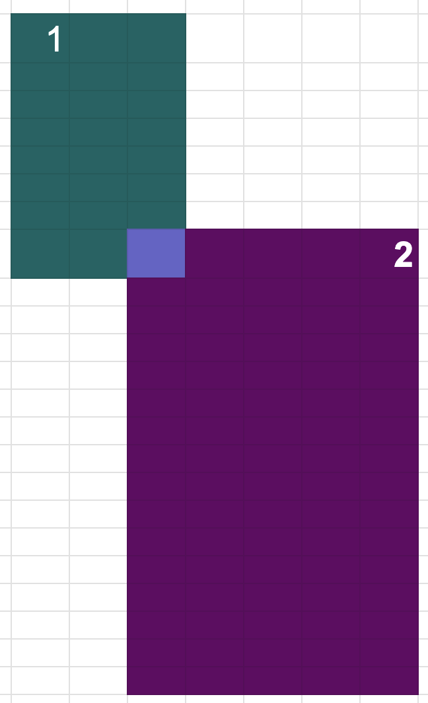

--- Day 6: Probably a Fire Hazard --- Because your neighbors keep defeating you in the holiday house decorating contest year after year, you've decided to deploy one million lights in a 1000x1000 grid. Furthermore, because you've been especially nice this year, Santa has mailed you instructions on how to display the ideal lighting configuration. Lights in your grid are numbered from 0 to 999 in each direction; the lights at each corner are at 0,0, 0,999, 999,999, and 999,0. The instructions include whether to turn on, turn off, or toggle various inclusive ranges given as coordinate pairs. Each coordinate pair represents opposite corners of a rectangle, inclusive; a coordinate pair like 0,0 through 2,2 therefore refers to 9 lights in a 3x3 square. The lights all start turned off. To defeat your neighbors this year, all you have to do is set up your lights by doing the instructions Santa sent you in order. For example: turn on 0,0 through 999,999 would turn on (or leave on) every light. toggle 0,0 through 999,0 would toggle the first line of 1000 lights, turning off the ones that were on, and turning on the ones that were off. turn off 499,499 through 500,500 would turn off (or leave off) the middle four lights. After following the instructions, how many lights are lit? ---
sort -R original_input.txt > shuffled_input.txtA simple optimization can be done to maintain the numbers online, thus not needing to do the final grid walkthrough, but that would still leave the worst case runtime at O( \( R \times N^2 \) ) (R is a number of rectangles, N is the side of the grid).
Example run:
./target/release/bin 1 naive < src/input_shuffled.txt
211412
turn on 0,0 through 500,500
turn on 500,500 through 999,999
turn off 0,0 through 500,500
toggle 500,500 through 999,999
Exapmle where humans can quickly compute the answer, no matter the size of the areas covered:
Note that running this with k=1, k=100, k=1000 should obviously produce the same result of 1 overlapping cell, and humans would be quick to realize that.
However, a naive solution would take progressively longer as we increase k.
The idea of an optimized approach is as follows. We can sweep a vertical line and maintain the set of rectangles that fall into the current horizontal segment.
Code 1: sweeping vertical line
for pair in events_by_x_coord.iter() {
let x = pair.0;
if let Some(x_prev_value) = x_prev {
res += process_vertical_stripe(
x_prev_value,
*x,
&active_set_within_vertical_stripe,
&events_by_y_coord,
z_index,
);
}
for e in pair.1 {
if e.is_open {
active_set_within_vertical_stripe.insert(e.z_index);
} else {
active_set_within_vertical_stripe.remove(&e.z_index);
}
x_prev = Some(*pair.0);
}
}
Code 2: sweeping horizontal line
for p in events_by_y_coord.iter() {
let y = p.0;
if let Some(y_prev_val) = y_prev {
if !active_set_within_horizontal_stripe.is_empty() {
res += process_patch(
x_prev_val,
x,
y_prev_val,
*y,
&active_on_within_horizontal_stripe,
&active_off_within_horizontal_stripe,
&fw_toggle,
total_rectangles,
);
}
}
y_prev = Some(*y);
for e in p.1.iter() {
if !active_set_within_vertical_stripe.contains(&e.z_index) {
continue;
}
match e.is_open {
true => {
active_set_within_horizontal_stripe.insert(e.z_index);
match e.operation {
Operation::On => {
active_on_within_horizontal_stripe.insert(e.z_index);
}
Operation::Off => {
active_off_within_horizontal_stripe.insert(e.z_index);
}
Operation::Toggle => {
active_toggle_within_horizontal_stripe.insert(e.z_index);
fw_toggle.inc(e.z_index as usize);
}
}
}
false => {
active_set_within_horizontal_stripe.remove(&e.z_index);
match e.operation {
Operation::On => {
active_on_within_horizontal_stripe.remove(&e.z_index);
}
Operation::Off => {
active_off_within_horizontal_stripe.remove(&e.z_index);
}
Operation::Toggle => {
active_toggle_within_horizontal_stripe.remove(&e.z_index);
fw_toggle.dec(e.z_index as usize);
}
}
}
}
}
}
The next question is how to process a separate patch. The basic idea is this: any sequence of "on", "off" and "toggle" is equivalent to "on" or "off" followed by some numbers of toggles.
For example, 1:"on", 2:"off", 3:"off", 4:"on", 5:"toggle", 6:"on", 7:"toggle"
is
equivalent to just
6:"on", 7:"toggle"
because the "on" at step 6 makes it irrelevant what was the prior sequence.
To quickly compute number of toggles that happened after a certain index, we can employ range some query.
Code 3: figuring out the state of the patch
fn process_patch(
left: u32,
right: u32,
bottom: u32,
top: u32,
turn_on: &BTreeSet,
turn_off: &BTreeSet,
fw_toggle_active: &FenwickTree,
total_rectangles: i32,
) -> u32 {
let mut base_val = false;
let mut last_turn: i32 = *turn_off.last().unwrap_or(&-1);
if let Some(turn_on_last) = turn_on.last() {
if *turn_on_last > last_turn {
last_turn = *turn_on_last;
base_val = true;
}
}
let toggles_after_last_turn = fw_toggle_active.sum_range(last_turn + 1, total_rectangles - 1);
if toggles_after_last_turn % 2 == 1 {
base_val = !base_val;
}
if base_val {
let h = (right - left) as u32;
let v = (top - bottom) as u32;
h * v
} else {
0
}
}

In this example we have 3 rectangles: 1, 2, 3. We have 5 segments between vertical lines: V1, V2, ..., V5. We have 5 segments between horizontal lines: H1, H2, ... H5.
To pre-process input: \( R \log R \) since we read R rectangles and add data to sets and maps.
To compute result:
Note that it doesn't depend on the size of the grid or of any of the retangles anymore, but only on the number of rectangles.
pub struct FenwickTree {
size: usize,
t: Vec,
}
impl FenwickTree {
pub fn new(n: usize) -> FenwickTree {
FenwickTree {
size: n,
t: vec![0; n as usize],
}
}
pub fn sum(&self, mut range: i32) -> u32 {
let mut res: u32 = 0;
while range >= 0 {
res += self.t[range as usize];
range = (range & (range + 1)) - 1;
}
res
}
pub fn inc(&mut self, mut i: usize) {
while i < self.size {
self.t[i] += 1;
i = i | (i + 1);
}
}
pub fn dec(&mut self, mut i: usize) {
while i < self.size {
self.t[i] -= 1;
i = i | (i + 1);
}
}
pub fn sum_range(&self, l: i32, r: i32) -> u32 {
self.sum(r) - self.sum(l - 1)
}
}
The data below has been collected by running the command:
% /usr/bin/time -lh ./target/release/bin 10 naive < src/input_shuffled.txt
20992232
Time: 2431 ms
2.43s real 2.41s user 0.01s sys
104857600 maximum resident set size
0 average shared memory size
0 average unshared data size
0 average unshared stack size
6583 page reclaims
13 page faults
0 swaps
0 block input operations
0 block output operations
0 messages sent
0 messages received
0 signals received
4 voluntary context switches
28 involuntary context switches
51317968081 instructions retired
9501259555 cycles elapsed
104596544 peak memory footprint
% /usr/bin/time -lh ./target/release/bin 10 optimized < src/input_shuffled.txt
20992232
Time: 20 ms
0.02s real 0.02s user 0.00s sys
1769472 maximum resident set size
0 average shared memory size
0 average unshared data size
0 average unshared stack size
303 page reclaims
0 page faults
0 swaps
0 block input operations
0 block output operations
0 messages sent
0 messages received
0 signals received
0 voluntary context switches
13 involuntary context switches
119355746 instructions retired
51174896 cycles elapsed
1426240 peak memory footprint
k=10: naive time 2431 ms, naive memory 99.8 Mb
k=10: optimized time 20 ms, optimized memory 1.4 Mb
[1] The original problem is taken from here: https://adventofcode.com/2015/day/6
[2] The fenwick tree implementation is a rip-off of this: http://e-maxx.ru/algo/fenwick_tree
[3] Full source code directory: link
[4] Test file input_shuffled.txt
[5] Test file easy_for_humans.txt
[6] Full code of main.rs
© Copyright 2025, Iaroslav Tymchenko